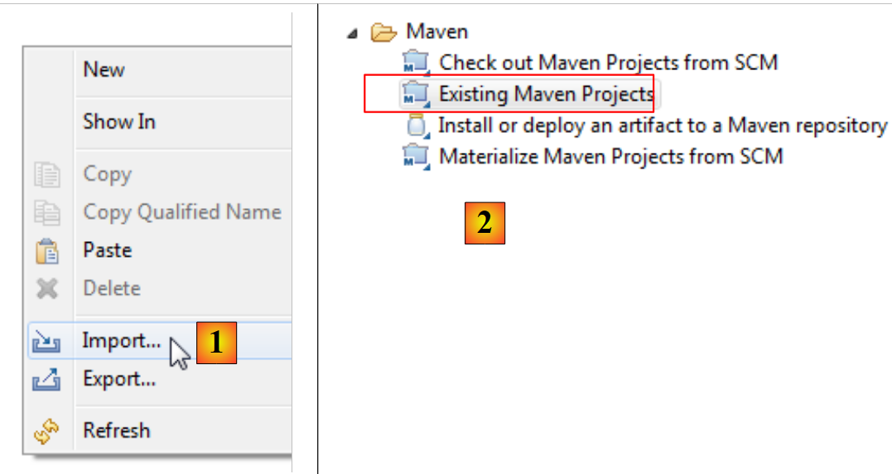
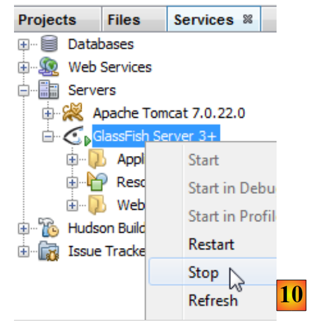
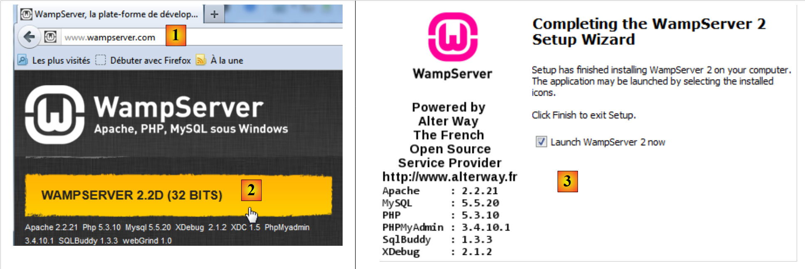
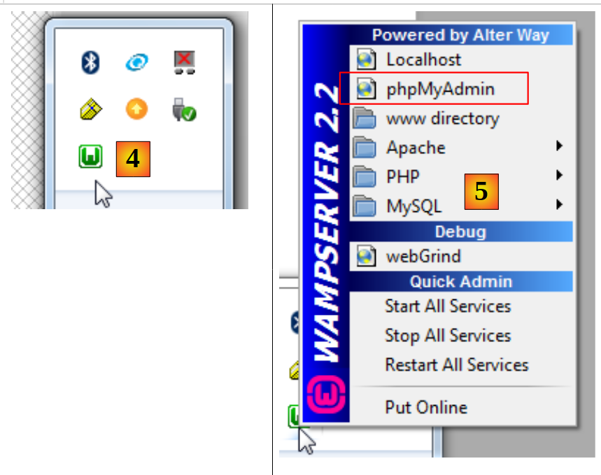

1. Einführung
1.1. Übersicht
Das PDF dieses Dokuments finden Sie |HIER|.
Die Beispiele in diesem Dokument finden Sie |HIER|.
Hier möchten wir anhand von Beispielen
- das Java Server Faces 2 (JSF2)-Framework,
- die PrimeFaces-Komponentenbibliothek für JSF2 sowie für Desktop- und mobile Anwendungen.
Dieses Dokument richtet sich in erster Linie an Studierende und Entwickler, die sich für die PrimeFaces-Komponentenbibliothek [http://www.primefaces.org] interessieren. Dieses Framework bietet Dutzende von AJAX-fähigen Komponenten [http://www.primefaces.org/showcase/ui/home.jsf], mit denen Sie Webanwendungen erstellen können, deren Erscheinungsbild dem von Desktop-Anwendungen ähnelt. PrimeFaces basiert auf JSF2, daher ist es notwendig, dieses Framework zunächst vorzustellen. PrimeFaces bietet auch spezifische Komponenten für mobile Geräte an. Auch diese werden wir behandeln.
Um unseren Standpunkt zu veranschaulichen, werden wir eine Terminplanungsanwendung in verschiedenen Umgebungen erstellen:
- eine klassische Webanwendung unter Verwendung von JSF2-/EJB3-/JPA-Technologien auf einem GlassFish 3.1-Server,
- die gleiche Anwendung mit AJAX-Unterstützung unter Verwendung der PrimeFaces-Technologie
- und schließlich eine mobile Version unter Verwendung der PrimeFaces Mobile-Technologie.
Jedes Mal, wenn eine Version erstellt wird, werden wir sie in einer JSF2-/Spring-/JPA-Umgebung auf einem Tomcat 7-Server bereitstellen. Wir werden daher sechs Java-EE-Anwendungen erstellen.
Dieses Dokument behandelt nur das, was für die Erstellung dieser Anwendungen notwendig ist. Erwarten Sie daher keine Vollständigkeit – die werden Sie hier nicht finden. Es handelt sich auch nicht um eine Sammlung von Best Practices. Erfahrene Entwickler werden vielleicht feststellen, dass sie die Dinge anders gemacht hätten. Ich hoffe lediglich, dass dieses Dokument auch keine Sammlung von schlechten Praktiken ist.
Um mehr über JSF2 und PrimeFaces zu erfahren, können Sie die folgende Referenz nutzen: :
- [ref1]: Java EE5 Tutorial [http://java.sun.com/javaee/5/docs/tutorial/doc/index.HTML], die Sun-Referenz zum Erlernen von Java EE5. Lesen Sie Teil II [Web Tier], um sich mit Webtechnologien, insbesondere JSF, vertraut zu machen. Die Beispiele des Tutorials können heruntergeladen werden. Sie liegen in Form von NetBeans-Projekten vor, die geladen und ausgeführt werden können,
- [ref2]: „Core JavaServer Faces“ von David Geary und Cay S. Horstmann, dritte Auflage, erschienen bei McGraw-Hill,
- [ref3]: PrimeFaces-Dokumentation [http://primefaces.googlecode.com/files/primefaces_users_guide_3_2.pdf],
- [ref4]: PrimeFaces Mobile-Dokumentation: [http://primefaces.googlecode.com/files/primefaces_mobile_users_guide_0_9_2.pdf].
Wir werden gelegentlich auf [ref2] verweisen, um den Leser darauf hinzuweisen, dass er sich mithilfe dieses Buches eingehender mit einem Thema befassen kann.
Dieses Dokument wurde so verfasst, dass es einem möglichst breiten Publikum zugänglich ist. Die Voraussetzungen für das Verständnis sind folgende:
- Kenntnisse der Programmiersprache Java,
- Grundkenntnisse in der Java-EE-Entwicklung.
Alle Ressourcen, die zur Erfüllung dieser Voraussetzungen benötigt werden, finden Sie auf der Website [https://developpez.com]. Einige davon finden Sie auf der Website [https://stahe.github.io]:
- [ref5]: Einführung in die Webprogrammierung in Java (September 2002): behandelt die Grundlagen der Webprogrammierung in Java: Servlets und JSP-Seiten,
- [ref6]: Die Grundlagen der MVC-Webentwicklung in Java (Mai 2006) []: empfiehlt die Entwicklung von Webanwendungen unter Verwendung von dreischichtigen Architekturen, bei denen die Webschicht das MVC-Entwurfsmuster (Model, View, Controller) implementiert.
- [ref7]: Einführung in Java EE 5 (Januar 2012).
- [ref8]: Java Persistence in der Praxis (Juni 2007). Dieses Dokument bietet eine Einführung in die Datenpersistenz unter Verwendung von JPA (Java Persistence API).
- [ref9]: Erstellen eines Java EE-Webdienstes mit NetBeans und dem GlassFish-Server (Januar 2009). Dieses Dokument behandelt den Prozess der Erstellung eines Webdienstes. Die in diesem Dokument besprochene Beispielanwendung stammt aus [ref9].
1.2. Beispiel-
Die Beispiele in diesem Dokument sind |HIER| als Maven-Projekte für NetBeans und Eclipse verfügbar:
 |
So importieren Sie ein Projekt in NetBeans:
 |
- Öffnen Sie in [1] ein Projekt,
- wählen Sie in [2] das Projekt aus, das im Dateisystem geöffnet werden soll,
- in [3] wird es geöffnet.
Mit Eclipse,
 |
- in [1] ein Projekt importieren,
- in [2] ist das Projekt ein bestehendes Maven-Projekt,
 |
 |
- in [3]: Sie wählen es im Dateisystem aus,
- in [4]: Eclipse erkennt es als Maven-Projekt,
- in [5], das importierte Projekt.
1.3. Verwendete Tools
Im weiteren Verlauf verwenden wir (Stand Mai 2012):
- die NetBeans 7.1.2 IDE (Integrierte Entwicklungsumgebung), verfügbar unter [http://www.netbeans.org],
- die Eclipse Indigo IDE [http://www.eclipse.org/] in ihrer angepassten Form als SpringSource Tool Suite (STS) [http://www.springsource.com/developer/sts],
- PrimeFaces Version 3.2, verfügbar unter [http://primefaces.org/],
- PrimeFaces Mobile Version 0.9.2, verfügbar unter [http://primefaces.org/],
- WampServer für die MySQL-Datenbank [http://www.wampserver.com/].
1.3.1. Installation der NetBeans-IDE
Hier beschreiben wir die Installation von NetBeans 7.1.2, verfügbar unter der URL [http://netbeans.org/downloads/].
 |
Sie können die Java EE-Version sowohl mit GlassFish 3.1.2 als auch mit Apache Tomcat 7.0.22 wählen. Ersteres ermöglicht Ihnen die Entwicklung von Java EE-Anwendungen mit EJB3 (Enterprise JavaBeans), während letzteres die Entwicklung von Java EE-Anwendungen ohne EJB ermöglicht. Wir werden die EJBs anschließend durch das Spring-Framework [http://www.springsource.com/] ersetzen.
Sobald das NetBeans-Installationsprogramm heruntergeladen wurde, führen Sie es aus. Dazu benötigen Sie ein JDK (Java Development Kit) [http://www.oracle.com/technetwork/java/javase/overview/index.HTML]. Installieren Sie zusätzlich zu NetBeans 7.1.2:
- das JUnit-Framework für Unit-Tests,
- den GlassFish 3.1.2-Server,
- den Tomcat 7.0.22-Server.
Starten Sie NetBeans, sobald die Installation abgeschlossen ist:
 |
- in [1] NetBeans 7.1.2 mit drei Registerkarten:
- Die Registerkarte [Projekte] zeigt die geöffneten NetBeans-Projekte an;
- die Registerkarte [Dateien] zeigt die verschiedenen Dateien an, aus denen die geöffneten NetBeans-Projekte bestehen;
- Die Registerkarte [Dienste] fasst eine Reihe von Tools zusammen, die von NetBeans-Projekten verwendet werden,
- Wählen Sie in [2] die Registerkarte [Dienste] und in [3] den Abschnitt [Server] aus;
- in [4] starten Sie den Tomcat-Server, um zu überprüfen, ob er korrekt installiert ist,
 |
- In [6] können Sie auf der Registerkarte [Apache Tomcat] [5] überprüfen, ob der Server korrekt gestartet wurde;
- Beenden Sie in [7] den Tomcat-Server,
Führen Sie die gleichen Schritte aus, um zu überprüfen, ob der GlassFish 3.1.2-Server korrekt installiert ist:
 |
- Starten Sie in [8] den GlassFish-Server,
- Überprüfen Sie in [9], ob er korrekt gestartet wurde,
 |
- in [10] den Server beenden.
Wir haben nun eine voll funktionsfähige IDE. Wir können mit der Erstellung von Projekten beginnen. Während wir an diesen Projekten arbeiten, werden wir verschiedene Funktionen der IDE erkunden.
Wir werden nun die Eclipse-IDE installieren und die beiden Server – Tomcat 7 und GlassFish 3.1.2 –, die wir gerade heruntergeladen haben, darin registrieren. Dazu müssen wir die Installationsverzeichnisse für diese beiden Server kennen. Diese Informationen finden sich in den Eigenschaften dieser beiden Server:
 |
- in [1] ist der Installationsordner für Tomcat 7,
 |
- in [2] der Ordner für die GlassFish-Serverdomänen. Bei der Registrierung von GlassFish in Eclipse müssen Sie lediglich die folgenden Informationen angeben: [D:\Programme\devjava\Glassfish\glassfish-3.1.2\glassfish].
1.3.2. Installation der Eclipse-IDE
Obwohl Eclipse nicht die in diesem Dokument verwendete IDE ist, werden wir dennoch ihre Installation beschreiben. Der Grund dafür ist, dass die Beispiele in diesem Dokument auch als Maven-Projekte für Eclipse bereitgestellt werden. Maven ist in Eclipse nicht vorinstalliert. Sie müssen dazu ein Plugin installieren. Anstatt eine abgespeckte Eclipse-Version zu installieren, werden wir die SpringSource Tool Suite [http://www.springsource.com/developer/sts] installieren, eine Eclipse-Version, die bereits mit zahlreichen Plugins zum Spring-Framework sowie einer vorinstallierten Maven-Konfiguration ausgestattet ist.
 |
- Gehen Sie auf die Website der SpringSource Tool Suite (STS) [1], um die aktuelle Version von STS [2A] [2B] herunterzuladen.
 |
 |
- Die heruntergeladene Datei ist ein Installationsprogramm, das die Dateiverzeichnisstruktur [3A] [3B] erstellt. In [4] starten wir die ausführbare Datei,
- in [5] den IDE-Arbeitsbereich nach dem Schließen des Begrüßungsfensters. In [6] wird das Fenster „Anwendungsserver“ angezeigt,
 |
- in [7] das Serverfenster. Ein Server ist registriert. Es handelt sich um einen VMware-Server, den wir nicht verwenden werden. In [8] rufen wir den Assistenten zum Hinzufügen eines neuen Servers auf,
 |
- in [9A] werden verschiedene Server angeboten. Wir entscheiden uns für die Installation eines Apache Tomcat 7-Servers [9B],
 |
- in [10] geben wir das Installationsverzeichnis für den mit NetBeans installierten Tomcat 7-Server an. Wenn Sie keinen Tomcat-Server haben, verwenden Sie die Schaltfläche [11],
- in [12] erscheint der Tomcat-Server im Fenster [Server],
 |
- in [13] starten wir den Server,
- in [14] läuft er,
- in [15] stoppen wir ihn.
Im [Console]-Fenster sollten Sie die folgenden Tomcat-Protokolle sehen, wenn alles ordnungsgemäß funktioniert:
 |
- Fügen Sie im Fenster [Servers] einen neuen Server hinzu [16],
- in [17] ist der Glassfish-Server nicht aufgeführt,
- verwenden Sie in diesem Fall den Link [18],
 |
- Wählen Sie in [19] die Option zum Hinzufügen eines Adapters für den GlassFish-Server,
- dieser wird heruntergeladen, und fügen Sie im Fenster [Server] einen neuen Server hinzu,
- diesmal werden in [21] die GlassFish-Server aufgelistet,
 |
- Wählen Sie in [22] den mit NetBeans heruntergeladenen GlassFish 3.1.2-Server aus,
- Geben Sie in [23] den Installationsordner von GlassFish 3.1.2 an (achten Sie auf den in [24] angegebenen Pfad).
- Wenn Sie keinen GlassFish-Server haben, verwenden Sie die Schaltfläche [25],
 |
- In [26] fragt der Assistent nach dem Administratorpasswort für den GlassFish-Server. Bei einer Erstinstallation lautet dieses normalerweise adminadmin,
- sobald der Assistent fertig ist, erscheint der GlassFish-Server im Fenster [Server] [27],
 |
- in [28] starten Sie ihn,
- in [29] kann ein Problem auftreten. Dies hängt von den bei der Installation angegebenen Informationen ab. GlassFish benötigt ein JDK (Java Development Kit) und kein JRE (Java Runtime Environment),
- um auf die GlassFish-Server-Eigenschaften zuzugreifen, doppelklicken Sie im Fenster [Servers] darauf,
- wodurch sich das Fenster [20] öffnet; folgen Sie dort dem Link [Runtime Environment],
 |
- In [31] werden wir die Standard-JRE durch ein JDK ersetzen. Verwenden Sie dazu den Link [32],
- in [33] die auf dem Rechner installierten JREs,
- in [34] fügen Sie ein weiteres hinzu,
 |
- Wählen Sie in [35] [Standard VM] (Virtual Machine) aus,
- Wählen Sie in [36] ein JDK (>=1.6) aus,
- geben Sie in [37] einen Namen für die neue JRE ein,
 |
- Zurück auf dem JRE-Auswahlbildschirm für GlassFish wählen Sie das in [38] angegebene neue JRE aus,
- Sobald der Konfigurationsassistent abgeschlossen ist, starten Sie [GlassFish] [39] neu,
- in [40] wird es gestartet,
 |
- in [41] die Server-Verzeichnisstruktur,
- in [42] greifen wir auf die GlassFish-Protokolle zu:
 |
- In [43] stoppen wir den Glassfish-Server.
1.3.3. Installation von [ WampServer]
[WampServer] ist eine Software-Suite für die Entwicklung mit PHP/MySQL/Apache auf einem Windows-Rechner. Wir werden sie ausschließlich für das MySQL-DBMS verwenden.
 |
- Wählen Sie auf der [WampServer]-Website [1] die passende Version [2] aus.
- die heruntergeladene ausführbare Datei ist ein Installationsprogramm. Während der Installation werden verschiedene Informationen abgefragt. Diese betreffen MySQL nicht und können daher ignoriert werden. Am Ende der Installation erscheint das Fenster [3]. Starten Sie [WampServer],
 |
- in [4] erscheint das [WampServer]-Symbol in der Taskleiste unten rechts auf dem Bildschirm [4],
- wenn Sie darauf klicken, erscheint das [5]-Menü. Damit können Sie den Apache-Server und das MySQL-DBMS verwalten. Um Letzteres zu verwalten, verwenden Sie die Option [PhpMyAdmin],
- wodurch das unten abgebildete Fenster geöffnet wird,

Wir werden nur wenige Details zur Verwendung von [PhpMyAdmin] angeben. Wir zeigen lediglich, wie man damit die Datenbank für die Beispielanwendung in diesem Tutorial erstellt.